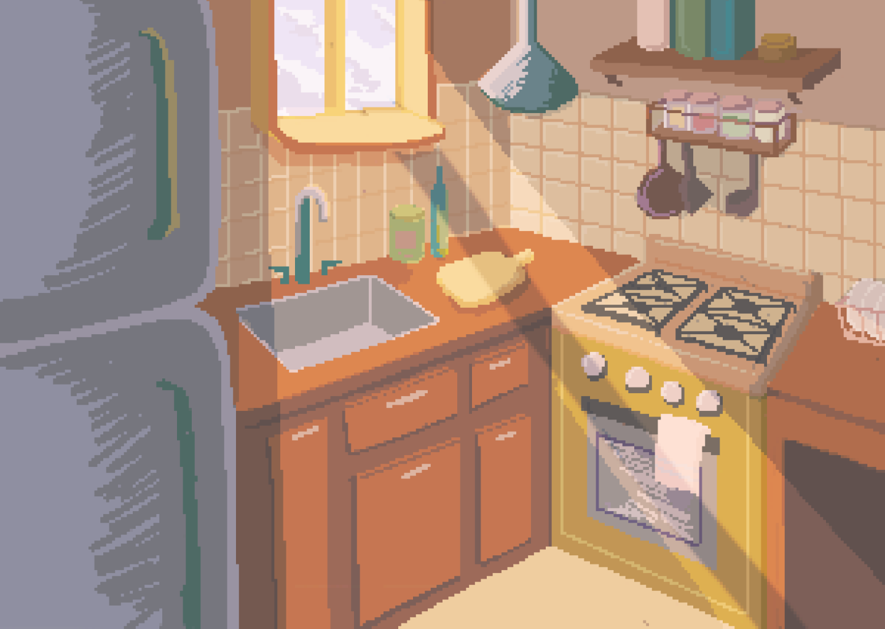

Featured Projects
This Machine is a Stranger
"This Machine is a Stranger" investigates how one can navigate life at the intersection of human intuition and the quiet, calculated logic of autonomous machines, questioning how much a person implicitly trusts or mistrusts a machine..
 This Machine is a Stranger
This Machine is a Stranger
 Fleeting States + Measured Values
Fleeting States + Measured Values

Granny Bytes